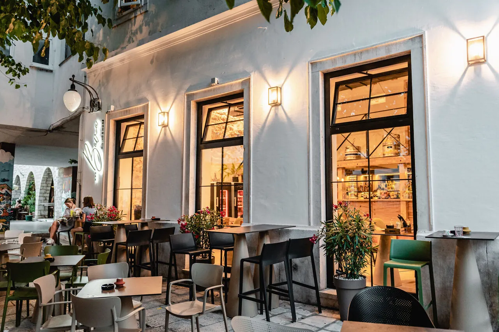
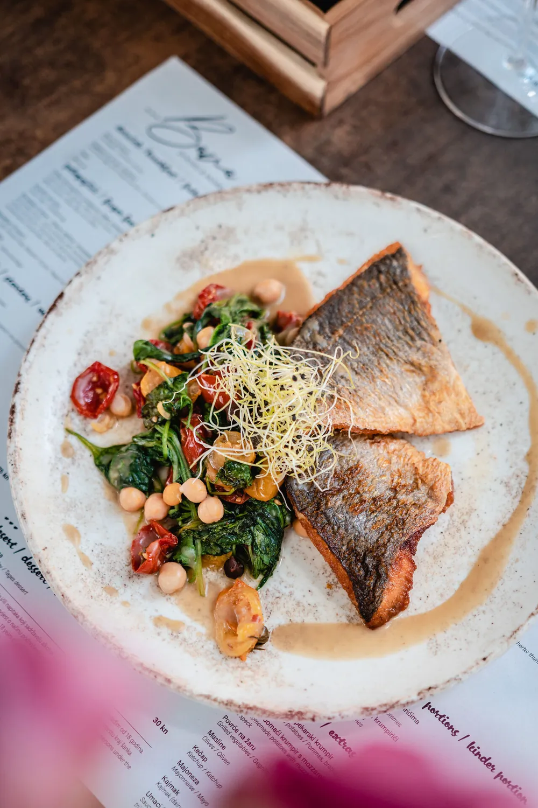
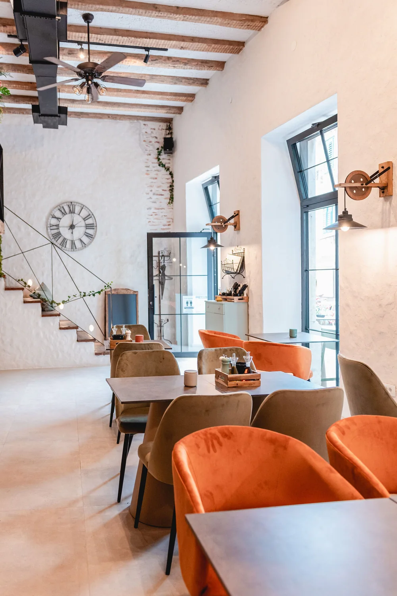

Naša priča
Dobra hrana za dobro raspoloženje — kuhamo sa strašću. Bistro na pjaceti u starom Šibeniku, stolovi u hladu velikog stabla, otvoreno svaki dan do ponoći.

Bistro na pjaceti u starom Šibeniku. Stolovi u hladu velikog stabla, burgeri, odresci i riba, bar uz kuhinju. Svaki dan do ponoći.
Bava je bistro u starom Šibeniku, na pjaceti u Zlarinskom prolazu, nekoliko koraka od mora. Stolovi su vani u hladu velikog stabla, unutra je svijetla klimatizirana sala. Kuhinja radi uz bar: burgeri, odresci, tjestenine i riba, uz koktele, vino, pivo i kavu. Svaki dan od 12 do ponoći.
Pjaceta pod stablom, svijetla sala i tanjuri iz kuhinje. Fotografije lokala.




Dobra hrana za dobro raspoloženje — kuhamo sa strašću. Bistro na pjaceti u starom Šibeniku, stolovi u hladu velikog stabla, otvoreno svaki dan do ponoći.